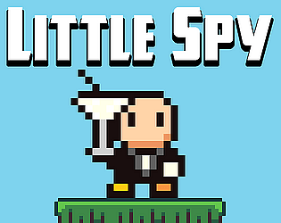
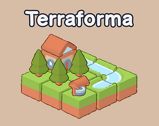
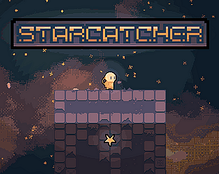
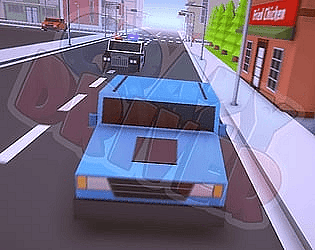
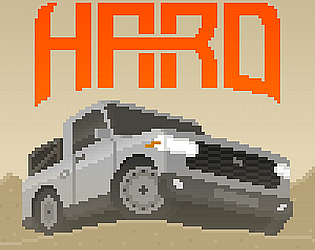
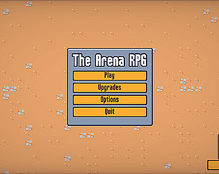

PIXWARE STUDIOS / YENİ OYUN
THE
LIE.
Her şey göründüğü gibi mi? Yeni psikolojik gerilim oyunumuz The Lie üzerinde çalışıyoruz. Gerçeği ortaya çıkarmamıza yardım et: ilk tester ekibine katıl.
ARE BETTER LEFT BURIEDIN DEVELOPMENT
PIXWARE STUDIOS
ERKEN ERİŞİM / TESTER ÇAĞRISI
İlk oynayan
sen ol.
The Lie'ı geliştirme sürecinde denemek ve geri bildirim vermek ister misin? Bize e-posta gönder; tester başvurunu birlikte değerlendirelim.
YAYIMLANMIŞ OYUNLAR
Oyuna gir.
Her biri farklı bir oynanış fikriyle başlayan Pixware yapımları.

Little SpyBir ajan olarak düşman kalesine sız, istihbaratı topla ve tahliye noktasına ulaş.itch.io'da incele ↗
TerraformaBloklar ve binalarla küçük bir dünya kur; yerleşimlerinle puan üret.itch.io'da incele ↗
starcatcherUzayda yıldızları topla; hareket ve zıplamayı tek tuş fikriyle yönet.itch.io'da incele ↗OYUN ODAĞI / TERRAFORMA
Küçük bir dünya.
Sonsuz fikir.
Bloklar ve binalar yerleştirerek kendi toprağını büyüt. Her seçim yeni bir düzen kurar; her tur stratejini değiştirir.
Terraforma'yı keşfet ↗Fikirden
oynanışa.
Pixware Studios, platform oyunlarından strateji ve yarış deneyimlerine uzanan bağımsız oyunlar geliştiriyor. Her projede farklı bir mekanik ve görsel dünya deniyoruz.
Stüdyoyu tanı ↗DAHA FAZLASI
Sonraki oyun.

Crazy DriverEngellerden ve polislerden kaçarak olabildiğince uzun süre hayatta kal.itch.io'da incele ↗
WheelhardEngebeli bölgelerde teslimat yap, araçlarını geliştir ve yeni rotalar aç.itch.io'da incele ↗
The Arena RPGPiksel sanatlı arenada karakterini seç ve mücadeleye gir.itch.io'da incele ↗PIXWARE STUDIOS
Yeni dünyalara
hazır mısın?
Tüm oyunlara itch.io sayfamızdan ulaşabilirsin.